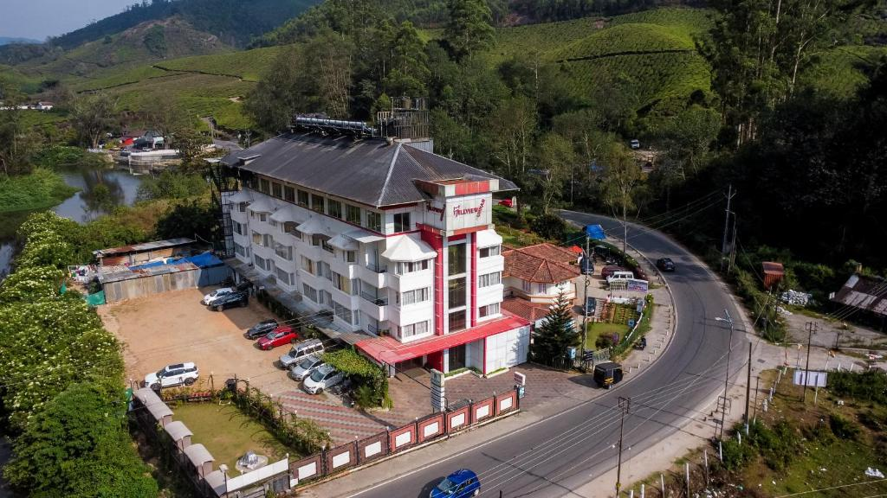
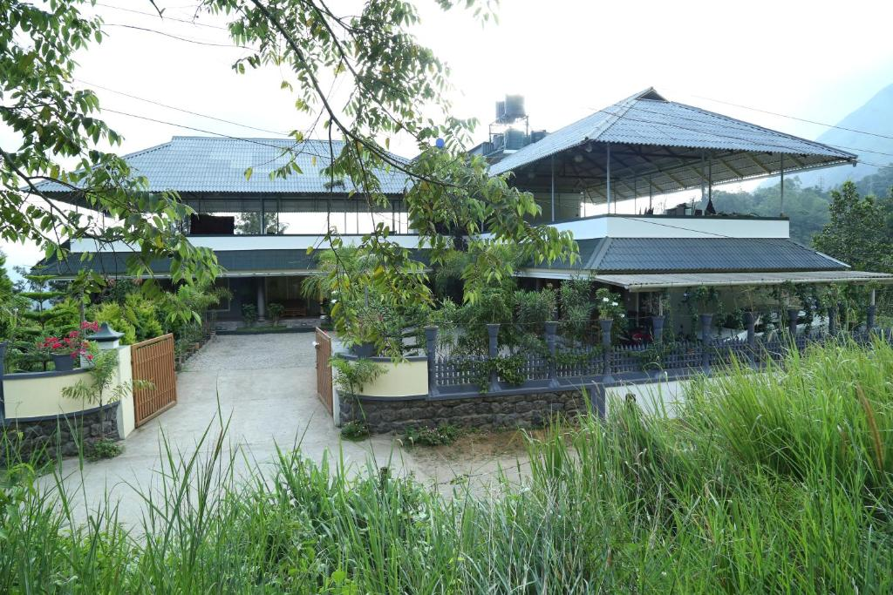
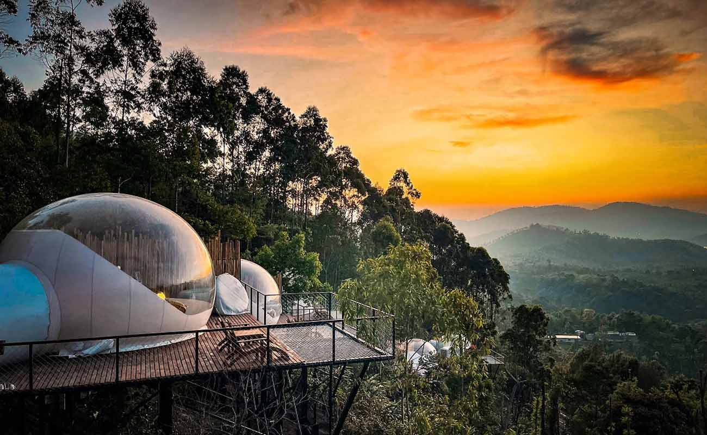

Top 10 Camping Stays in Munnar

Hill View Camping
Location: Near Tea Gardens
Rent: ₹3500/night
Enjoy stunning views of the hills and tea plantations.

Tranquil Valley Camp
Location: Munnar Town
Rent: ₹3200/night
Experience peace amidst lush greenery.

Wildlife Sanctuary Camp
Location: Munnar Wildlife Sanctuary
Rent: ₹3400/night
Explore the rich wildlife and natural beauty.

Sunset View Camp
Location: Pallivasal
Rent: ₹3200/night
Experience breathtaking sunsets from your camp.
_(13694719014).jpg)

 State-run Buses:
State-run Buses:
 Nearest Railway Station: Ernakulam:
Nearest Railway Station: Ernakulam:
 Nearest Airport: Cochin International Airport:
Nearest Airport: Cochin International Airport: